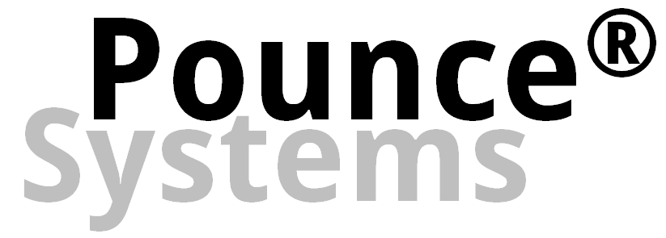

<ion-header [translucent]="true">
  <ion-toolbar color="pounce">
    <ion-title>Ithaca Children's Center</ion-title>
    <ion-buttons slot="start">
      <ion-back-button (click)="goBack()"></ion-back-button>
    </ion-buttons>
    <ion-buttons slot="end">
      <ion-button (click)="showUserMenu($event)">
        <ion-icon name="person"></ion-icon>
      </ion-button>
    </ion-buttons>
  </ion-toolbar>
</ion-header>

<ion-content [fullscreen]="true">
  <ion-grid [fixed]="true">
    <ion-row>
      <ion-col></ion-col>
      <ion-col class="ion-align-self-stretch">
        <ion-card routerDirection="forward" routerLink="lights">
          <ion-card-content class="ion-text-center">
            <ion-text color="primary">
              <fa-icon
                [icon]="['fas', 'lightbulb']"
                [fixedWidth]="true"
                size="2x"
              ></fa-icon>
            </ion-text>
          </ion-card-content>
        </ion-card>
      </ion-col>
      <ion-col></ion-col>
    </ion-row>
    <ion-row> </ion-row>
    <ion-row>
      <ion-col></ion-col>
      <ion-col>
        <ion-card routerDirection="forward" routerLink="outlets">
          <ion-card-content class="ion-text-center">
            <ion-text color="primary">
              <fa-icon
                [icon]="['fas', 'plug']"
                [fixedWidth]="true"
                size="2x"
              ></fa-icon>
            </ion-text>
          </ion-card-content>
        </ion-card>
      </ion-col>
      <ion-col></ion-col>
    </ion-row>

    <ion-title class="ion-text-center">Devices</ion-title>
    <ion-col
      size="6"
      *ngFor=" let device of devices"
      class="ion-align-self-stretch"
    >
      <ion-card routerDirection="forward" routerLink="{{ device }}">
        <ion-card-content>
          <ion-text color="primary" class="ion-nowrap">
            <strong>Device #{{ device }}</strong>
          </ion-text>
        </ion-card-content>
      </ion-card>
    </ion-col>
  </ion-grid>
</ion-content>
<ion-footer>
  <ion-toolbar>
    
  </ion-toolbar>
</ion-footer>
